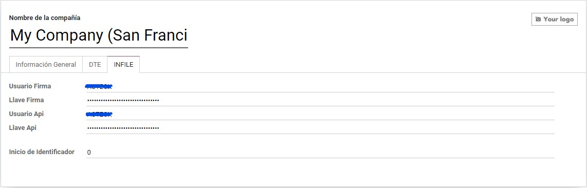
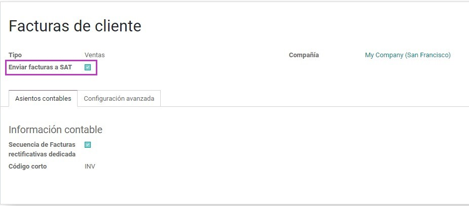
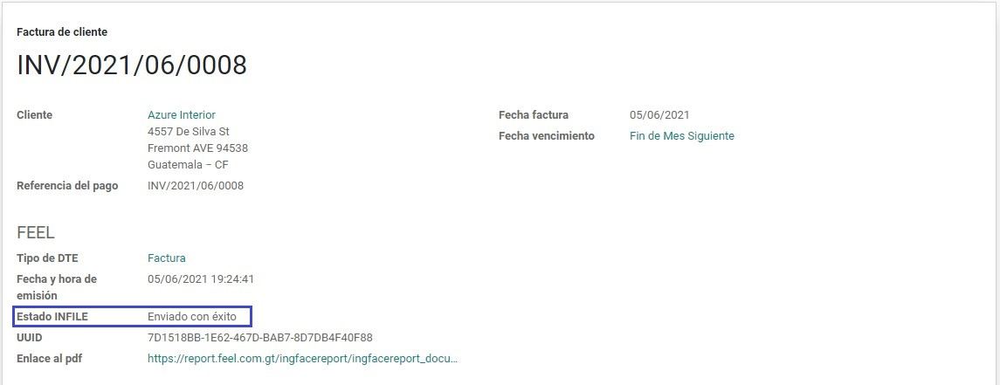
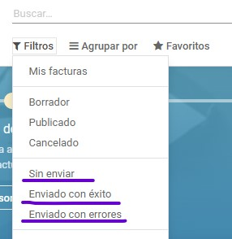
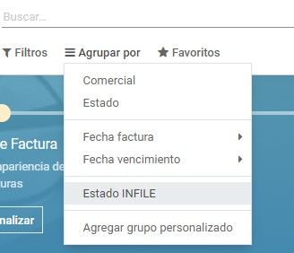

Compañía
Para realizar el envío de Documentos Tributarios Electrónicos (DTE) se requerirá ingresar las credenciales por
compañía

El campo Inicio de Identificador solo es visible en modo desarrollador y puede ser util para determinar el
número inicial de la secuencia de identificadores que se enviarán por cada documento.
Diarios
Para que se realice el envío de DTE de manera automatica al confirmar una factura, es necesario que el diario
seleccionado en la factura tenga habilitada la opción

Facturas
En el caso de que la factura se haya configurado correctamente, al confirmarla se enviará a la SAT por medio de
INFILE y este devolverá un archivo xml certificado. En este caso el campo de Estatus INFILE marcará "Enviado con
éxito". Así mismo se mostrarán el UUID y el enlace al reporte pdf de la transacción.

En caso de encontrarse un error en el procesamiento de la solicitud del lado de INFILE, se mostrará el campo de
estatus como "Enviado con errores" en color rojo y se mostrará la lista de errores en el chat.
Si el diario seleccionado no admite el envío de facturas, entonces al confirmar la factura el estatus cambiará a
"Sin enviar".
Filtros y grupos
En la vista de lista de facturas en la barra de búsqueda, se encontrará dentro de los filtros tres opciones
correspondientes a los posibles estatus de envío a INFILE. También aparecerá una opción para agrupar por este
campo (Estatus INFILE)

